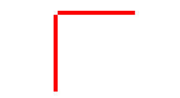
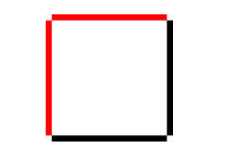
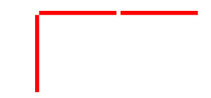

Squares and Segments
Little Sofia is in fourth grade. Today in the geometry lesson she learned about segments and squares. On the way home, she decided to draw n squares in the snow with a side length of 1. For simplicity, we assume that Sofia lives on a plane and can draw only segments of length 1, parallel to the coordinate axes, with vertices at integer points.
In order to draw a segment, Sofia proceeds as follows. If she wants to draw a vertical segment with the coordinates of the ends (x,y)and (x,y+1). Then Sofia looks if there is already a drawn segment with the coordinates of the ends (x′,y) and (x′,y+1) for some x′. If such a segment exists, then Sofia quickly draws a new segment, using the old one as a guideline. If there is no such segment, then Sofia has to take a ruler and measure a new segment for a long time. Same thing happens when Sofia wants to draw a horizontal segment, but only now she checks for the existence of a segment with the same coordinates x, x+1 and the differing coordinate y.
For example, if Sofia needs to draw one square, she will have to draw two segments using a ruler:

After that, she can draw the remaining two segments, using the first two as a guide:

If Sofia needs to draw two squares, she will have to draw three segments using a ruler:

After that, she can draw the remaining four segments, using the first three as a guide:
Sofia is in a hurry, so she wants to minimize the number of segments that she will have to draw with a ruler without a guide. Help her find this minimum number.
Input:
The only line of input contains a single integer n (1≤n≤109), the number of squares that Sofia wants to draw.
Output:
Print single integer, the minimum number of segments that Sofia will have to draw with a ruler without a guide in order to draw n squares in the manner described above.
範例:
input:
1 | 1 |
output:
1 | 2 |
input:
1 | 2 |
output:
1 | 3 |
input:
1 | 4 |
output:
1 | 4 |
Note:
題意:
現在可以用手畫長度為1的垂直或水平線段，並且畫了之後可以用工具複製它的平行線段，當現在要畫n個正方形的時候問你最少需要用手畫幾條線段？
思路:
可以用二分搜尋法或是用數學方法求解。
二分搜尋法:
先求得𝐾=2⌈√𝑛⌉，即是搜尋上限，接著以二分搜尋法搜尋0~K，mid為偶數時最多有個(𝑚𝑖𝑑/2)2方形，奇數時最多有個𝑚𝑖𝑑/2×(𝑚𝑖𝑑+1)/2方形。
數學方法:
線段跟方形的增加關係如下圖，因此題測資不夠大，可以直接硬解。